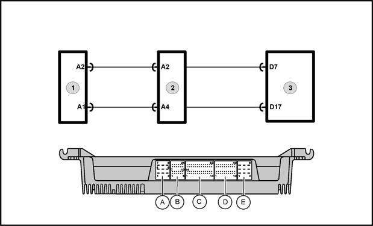
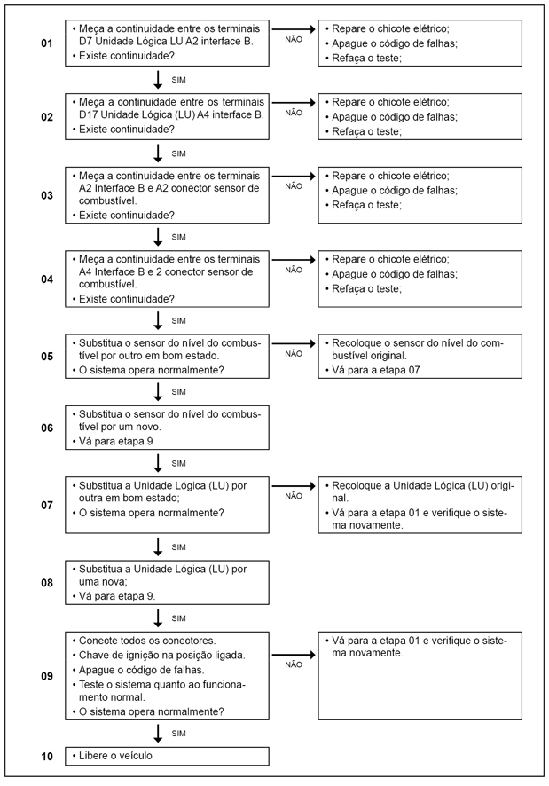

|

Legenda
- Sensor de nível do combustível
- Interface B
- Unidade lógica (LU)
Descrição da Falha
Circuito do sensor do nível de combustível, interrompido.
Indicação da Falha
A luz de advertência no indicador de nível do combustível ficará acesa.
Estratégia de Monitoramento
A Unidade Lógica (LU) monitora o nível de combustível no tanque, através do sensor do nível de combustível.
Efeito da Falha
O indicador de nível do combustível não funcionará e seu ponteiro permanecerá no nível vazio
Automaticamente, será executado a redução de potência do motor.
Possíveis Falhas
FMI 5: Interrupção no circuito.
- Sensor de nível do combustível com defeito.
Avisos
  Leia sempre as Recomendações para Diagnósticos. Leia sempre as Recomendações para Diagnósticos.
Posição
|
Resistência Elétrica (Ohm)
|
Cheio
|
88.0 + / - 4.5
|
3/4
|
63.0 + / - 3.5
|
1/2
|
44.0 + / - 2.5
|
1/4
|
25.0 + / - 2.5
|
Vazio
|
1.0 + / - 0.8
|
Registro de Falhas em
Outro Módulos de Comando
----
Passos do Diagnóstico de Falhas
Considerar os esquemas elétricos do
veículo

|